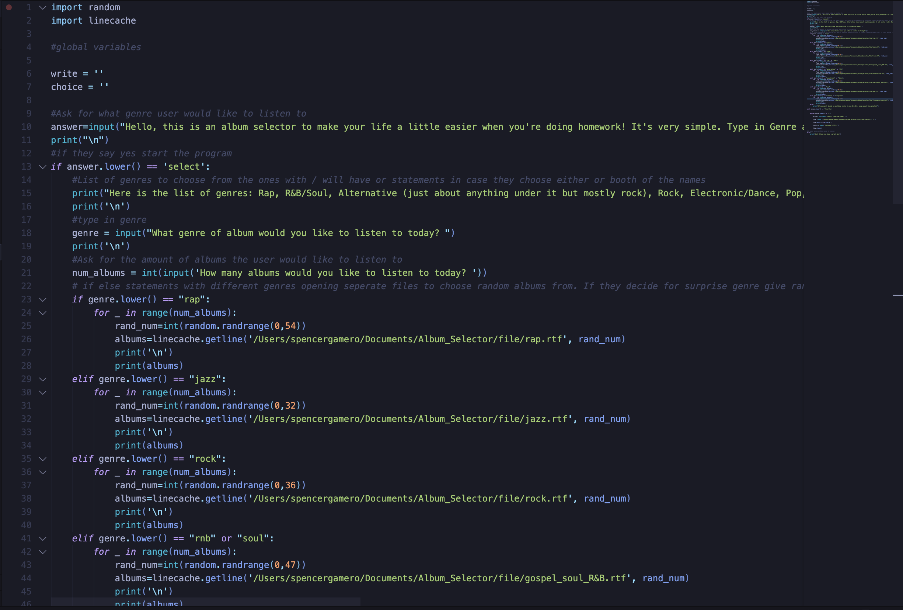
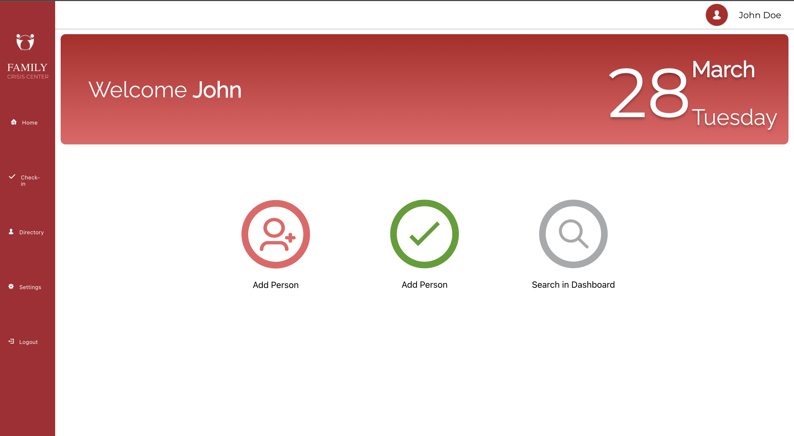

Accomplishments
Hi my name is Spencer, this is a website I've made to show off some projects I've worked on but also to show some things in my own life. This home page has some projects I'm working on or already been apart of. (I would show my personal project, an album selector, as well as this service project I've been working on. Once it's complete of course.)

This is a screenshot of a personal project of mine. It's a program that chooses albums for you depending on what you input. All you do is give it a genre and then a number of albums. It then randomly selects the amount of albums from the list and gives it back.

A screenshot of the page I worked on in my service project. At the start of this semester I signed up to work on a service project where a team of people would come together to work on a website for a Food Bank. In this screenshot here I helped work on the CSS of the project.